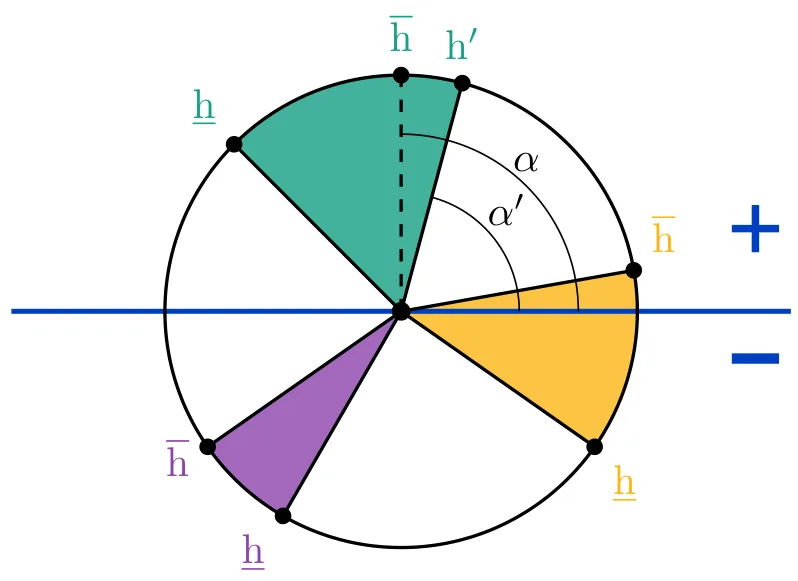
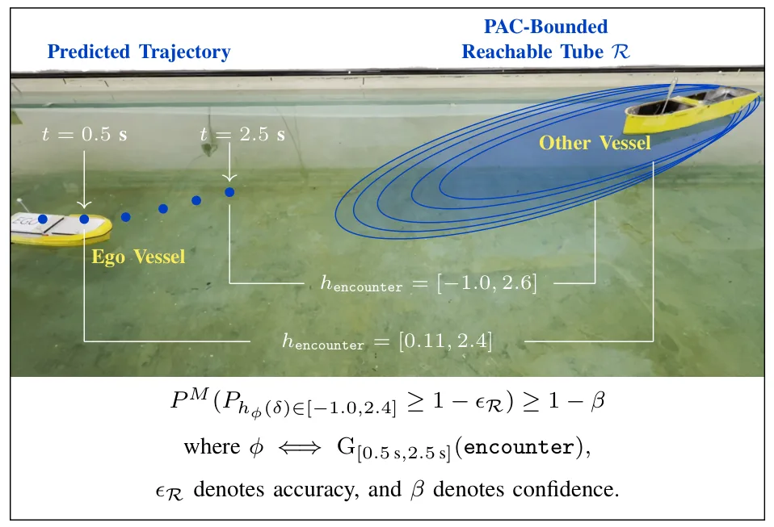
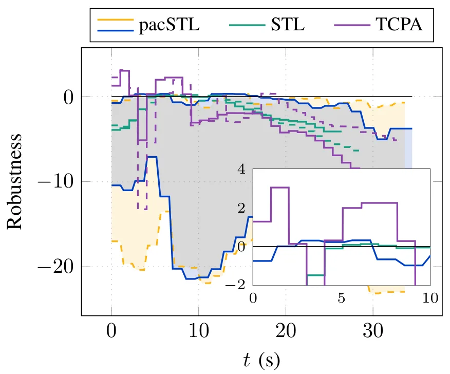
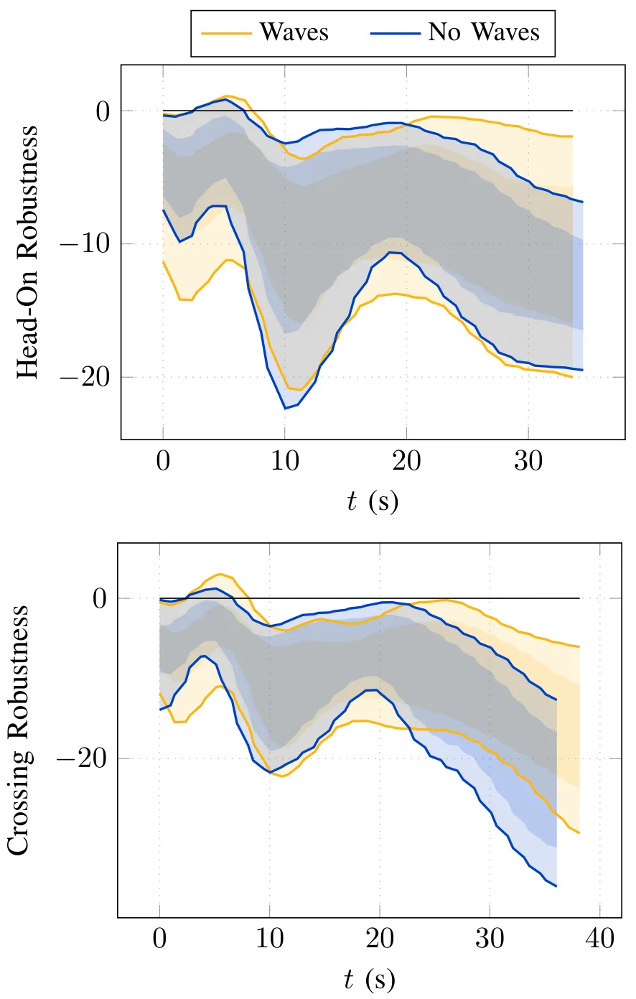
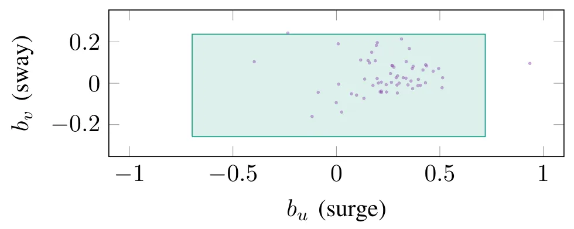
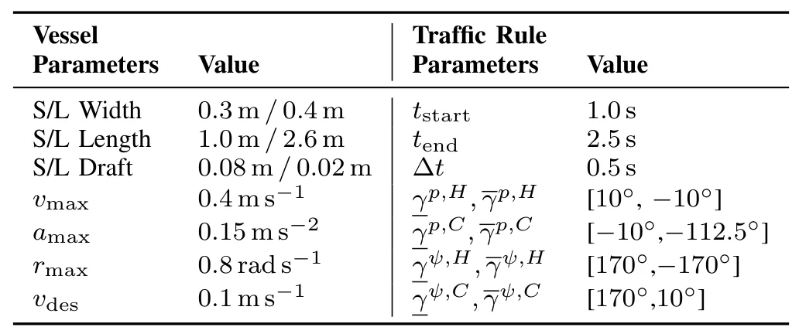
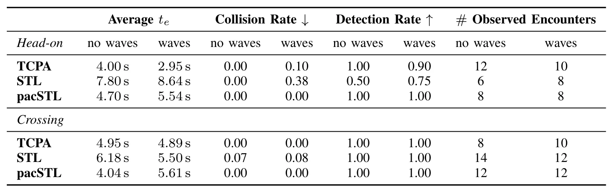

保持规范：不确定性下的实时监测及海事案例研究Staying on Spec: Real-Time Monitoring under Uncertainty with a Maritime Case Study
具有海事导航、实时性和硬件验证，对定位不确定性下的系统安全相关；并不提出新的定位或地图估计算法。
一句话工作总结
用数据驱动可达集在线判断导航行为是否仍满足复杂规范，为不确定定位与轨迹预测之上的风险监测增加一层保障。
摘要
论文提出在不确定性下实时监测机器人任务与安全规范的框架，以数据驱动可达集减少对大规模数据或显式不确定性分布的依赖。作者将框架实例化到受交通规则约束的海事导航，给出数据高效的可达集构建流程和适合实时部署的监测形式。仿真与硬件实验显示，其风险检测优于现有指标。
Robotic systems must operate under uncertainty while satisfying complex task and safety specifications. Monitoring such specifications under uncertainty remains challenging, as existing formulations typically require extensive data or explicit uncertainty distributions. In this paper, we propose a real-time monitoring framework that reduces data requirements by leveraging data-driven reachable sets for specification evaluation. We instantiate the framework for maritime navigation, where complex specifications arise from traffic rules. We develop a data-efficient pipeline for constructing reachable sets and derive a monitoring formulation suitable for real-time deployment. Simulation and hardware experiments demonstrate robust monitoring under realistic disturbances, achieving improved risk detection compared to state-of-the-art metrics.
中文解读摘录
- 原题：URHead: A Unified UV-Space Representation for Joint Mesh-3DGS Optimization in Head Avatars
- 作者：Seonghak Lee, Junhee Cho, Jisoo Park, Min-Gyu Park, Jongmin Lee, Ju Hong Yoon, Junseok Kwon
- 推荐评分：8.0/10
- 核心方法：让网格与 3D Gaussian Splatting 共享 UV 参数化，通过联合优化和自适应 Gaussian 采样，自动分配可控几何与照片级细节的表达职责。
- 为何值得看：直接回应 hybrid mesh–3DGS 中结构一致性与可控性难兼得的问题；重点核查 UV 拓扑限制、遮挡区域稳定性以及能否推广到通用动态对象。
图表/页面预览

{kind=link}

{kind=link}

{kind=link}

{kind=link}

{kind=link}

{kind=link}

{kind=link}
